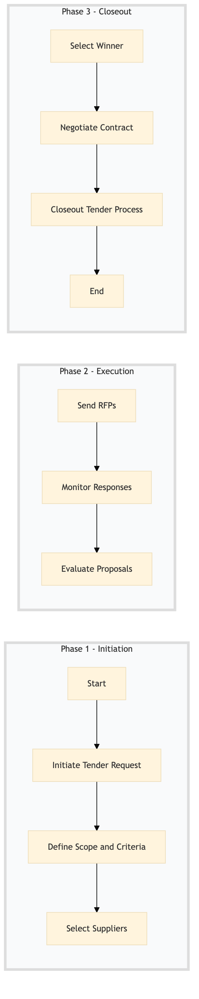

| Role | Steps |
|---|---|
| Procurement Manager | 1.1 1.2 1.3 2.1 2.2 2.3 3.1 3.2 3.3 |
| Step | Name | Role | System | Input | Output | KPI | Dec? | Exc? | Pain Point / Risk |
|---|---|---|---|---|---|---|---|---|---|
| 1.1 | Initiate Tender Request | Procurement Manager | Birchstreet Procurement | Tender Request Form | Tender Request Document | Less than 24 hours to initiate | N | Y | Delays in initiating the tender process can impact procurement timelines. |
| 1.2 | Define Scope and Criteria | Procurement Manager | Oracle OPERA Cloud | Tender Request Document | Scope of Work Document | Less than 48 hours to complete | N | Y | Inaccurate scope definitions can lead to misaligned proposals. |
| 1.3 | Select Suppliers | Procurement Manager | Birchstreet Procurement | Scope of Work Document | Supplier List | Less than 7 days to complete | N | Y | Limited supplier pool can reduce competition. |
| 2.1 | Send RFPs | Procurement Manager | Birchstreet Procurement | Supplier List | RFP Documents | Less than 3 days to send out all RFPs | N | Y | Late submission of RFPs can lead to missed deadlines. |
| 2.2 | Monitor Responses | Procurement Manager | Birchstreet Procurement | RFP Documents | Response Tracker | Less than 1 day to update status | N | Y | Inconsistent response tracking can lead to oversight. |
| 2.3 | Evaluate Proposals | Procurement Manager | Birchstreet Procurement | Response Tracker | Evaluation Report | Less than 5 days to complete evaluation | N | Y | Subjective evaluations can lead to biased decisions. |
| 3.1 | Select Winner | Procurement Manager | Birchstreet Procurement | Evaluation Report | Selection Document | Less than 2 days to finalize selection | Y | Y | Inconsistent decision-making can lead to disputes. |
| 3.2 | Negotiate Contract | Procurement Manager | Birchstreet Procurement | Selection Document | Contract Agreement | Less than 7 days to negotiate and sign contract | Y | Y | Prolonged negotiations can delay procurement. |
| 3.3 | Closeout Tender Process | Procurement Manager | Birchstreet Procurement | Contract Agreement | Tender Closure Report | Less than 24 hours to complete closure | N | Y | Incomplete closure can lead to audit issues. |
The Tender & RFP Management process at a Marriott full-service hotel involves initiating a request for proposals, managing the tendering process, and ensuring compliance with procurement policies.